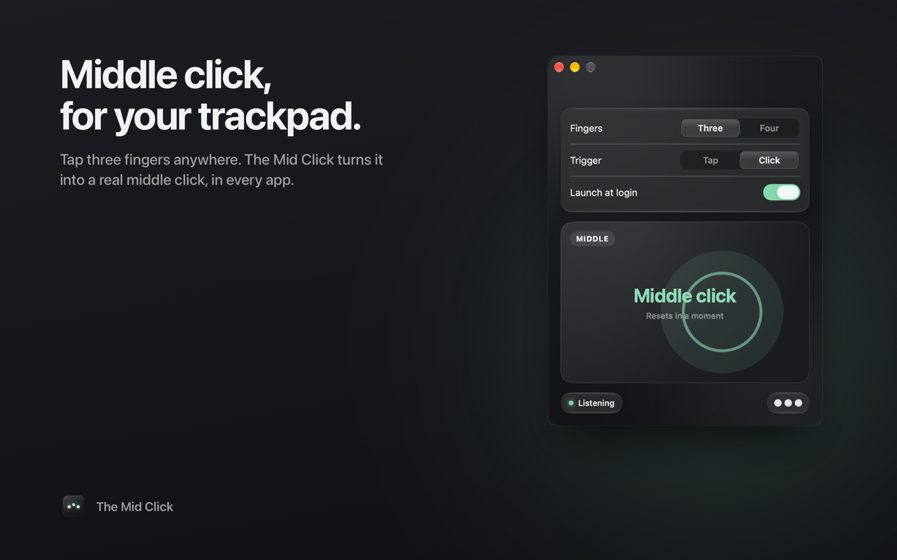

Middle click, for your trackpad.
Tap three fingers anywhere. The Mid Click turns it into a real middle click, in every app on your Mac.

What you can do with a middle click
Close tabs with a tap
Three fingers on a tab closes it in Safari, Chrome, Arc, Firefox, VS Code and Xcode.
Open links in the background
Tap a link and it opens in a new tab while you keep reading.
Orbit and pan in 3D and design tools
Set Trigger to Click, press with three fingers and drag. Blender, Fusion 360, Figma and Rhino all move the camera with middle-drag.
Support
The app says "Not listening"
It needs Accessibility access. Open System Settings → Privacy & Security → Accessibility (on macOS 27 it's called Device Control and Data Access) and turn on The Mid Click. If it isn't listed, click the plus button and choose it from Applications.
Where is the app? I don't see a window
It lives in the menu bar as a three-dot icon and has no Dock icon. Click the icon and choose Open The Mid Click to change settings or test clicks.
Hiding or restoring the menu bar icon
Hold ⌘ and drag the icon off the menu bar to hide it; the app keeps working. To get the icon and window back, open The Mid Click from Applications.
Tap does nothing, but Click works
Taps must be short and still: three fingers down and up within about a third of a second without sliding. If you rest your fingers first, use Click mode instead.
Three-finger tap conflicts with another gesture
Switch to four fingers in the app, or change the conflicting gesture in System Settings → Trackpad.
Something else
Email davletovalmir@gmail.com with your macOS version and what you expected to happen.